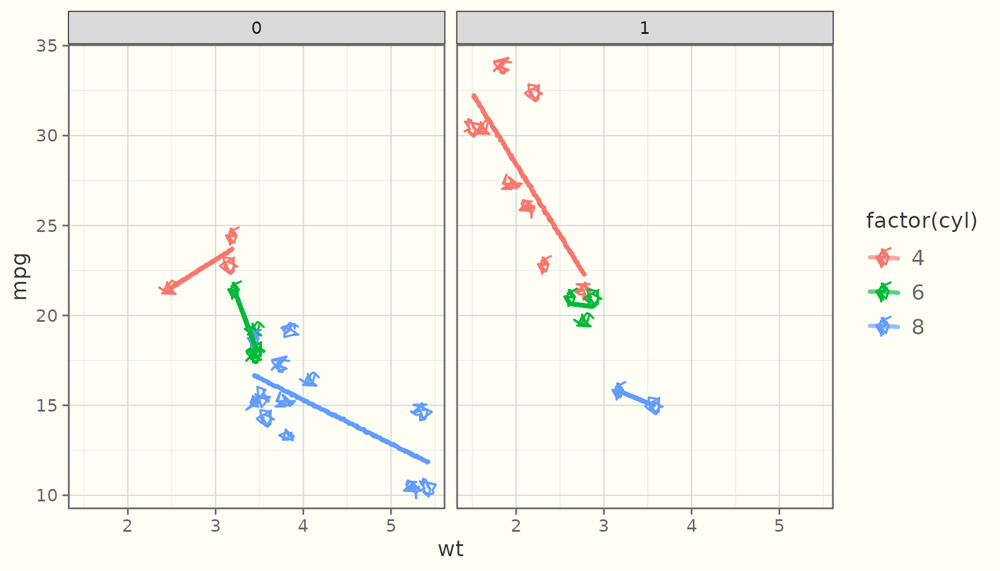

ggsketch is built in three strictly separated layers. Keeping them apart is what makes the package testable, device-independent, and reproducible.
Layer 1 — pure geometry
The core-* functions map numbers to
numbers. They take coordinates and sketch parameters and return
roughened coordinates — no grid, no ggplot2, no drawing. This is where
the rough.js algorithms are reimplemented in original R: point
roughening, cubic-Bézier sampling, ellipse generation, and an
Active-Edge-Table scan-line filler for hachure (including concave
polygons). ggsketch 2.0 adds more pure-geometry modules in the same
spirit — variable-width stroke ribbons (stroke_ribbon()),
watercolour washes (watercolor_wash()), paper textures
(paper_primitives()), and a squarified treemap layout
(treemap_layout()).
You can call them directly:
# Two passes of a roughened polyline through three points
passes <- roughen_polyline(x = c(0, 1, 2), y = c(0, 1, 0),
roughness = 1, n_passes = 2, seed = 1L)
length(passes) # one matrix per pass
#> [1] 2
head(passes[[1]]) # x/y coordinates of the first stroke
#> x y
#> [1,] -0.01208118 0.002597418
#> [2,] 0.10504600 0.093487679
#> [3,] 0.21350587 0.181953799
#> [4,] 0.31377351 0.267744807
#> [5,] 0.40632397 0.350609732
#> [6,] 0.49163232 0.430297605
# Hachure fill of a unit square: a list of line segments
segs <- hachure_fill(c(0, 1, 1, 0), c(0, 0, 1, 1),
hachure_gap = 0.2, hachure_angle = 45, seed = 1L)
length(segs)
#> [1] 6Because Layer 1 is pure, the package’s primary regression tests are deterministic geometry snapshots — they compare these numbers exactly, which is far more stable than comparing rendered images.
Layer 2 — grid grobs
The *_grob() constructors wrap Layer 1 in grid grobs
whose makeContent() method does the drawing. Crucially,
roughening happens after converting to absolute device
inches:
g <- sketch_path_grob(x = c(0.1, 0.5, 0.9), y = c(0.2, 0.8, 0.5),
roughness = 1, seed = 1L)
class(g)
#> [1] "SketchPathGrob" "gTree" "grob" "gDesc"Working in inch space (not data or npc space) means the wobble has a
consistent physical scale regardless of the panel’s aspect ratio or the
output device — and because makeContent() re-runs on each
draw, resizing a plot re-roughens cleanly at the new size instead of
stretching a cached path.
Layer 3 — ggproto geoms
The geom_sketch_*() functions are ordinary ggplot2
layers built with the public extension API (ggproto,
draw_panel/draw_group,
coord$transform, draw_key). That is why they
compose with everything in the grammar:
ggplot(mtcars, aes(wt, mpg, colour = factor(cyl))) +
geom_sketch_point(seed = 1L) +
geom_sketch_smooth(method = "lm", formula = y ~ x, se = FALSE, seed = 2L) +
facet_wrap(~am) +
theme_sketch()
Determinism
Every randomized routine draws from a seeded local RNG
stream and restores the global random state afterwards. So
sketch plots are reproducible given a seed, and they never
disturb set.seed() elsewhere in your code:
Credits & non-affiliation
The algorithms are reimplemented in original R from the published descriptions of the rough.js algorithms (Preet Shihn, 2020) and the hachure approach of Wood et al. No rough.js source is vendored, copied, or translated, and no JavaScript ships in the package.
ggsketch is an independent R package reimplementing the hand-drawn sketch aesthetic from first principles. It is not affiliated with, derived from, or endorsed by the rough.js project, ggrough, or any related JavaScript libraries.
rough.js is © Preet Shihn and licensed MIT. ggsketch is licensed MIT.
See inst/NOTICE for the full attribution.